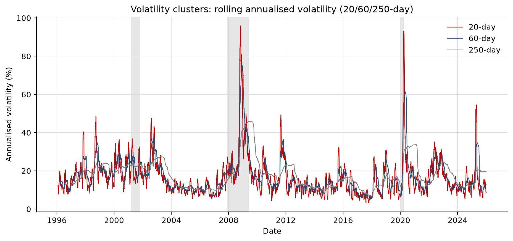
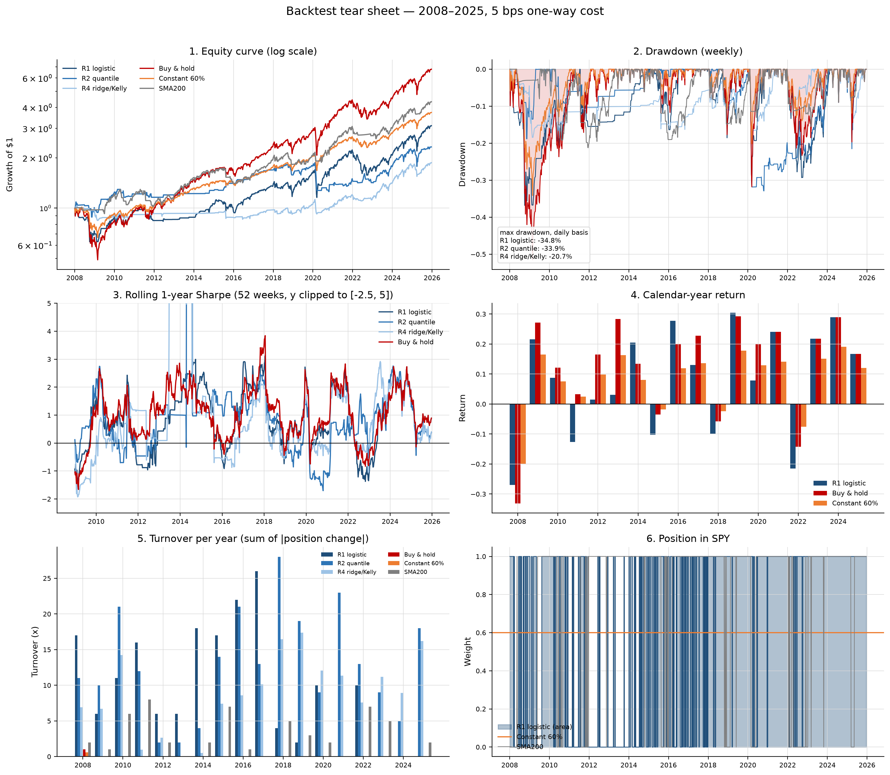

一句话结论
G05 · S&P 500 周频择时 · 1996–2025
主策略 R1：年化 6.5%、夏普 0.39、最大回撤 -36.8%；同期买入持有 11.2% / 0.59。结论：这套周频择时在样本外没有创造价值。
本页所有数字来自 reports/metrics.csv，由 uv run python -m src.pipeline 自动生成，没有手抄。
六条线（5 bps 单边成本）
| 策略 | 年化 | 夏普 | 最大回撤 | 年换手 |
|---|---|---|---|---|
| R1 逻辑回归（主策略） | 6.5% | 0.39 | -36.8% | 9.5 |
| R2 分位阈值 | 4.8% | 0.35 | -32.9% | 13.0 |
| R4 ridge / Kelly | 3.5% | 0.29 | -18.4% | 8.9 |
| 买入持有 | 11.2% | 0.59 | -51.5% | 0.1 |
| 恒定 60% | 7.6% | 0.59 | -34.2% | 0.0 |
| SMA200 | 8.5% | 0.61 | -21.2% | 3.0 |
怎么读这张表
- R1/R2/R4：三种把“上涨概率”变成仓位的规则，主结论只报 R1。
- 买入持有：最重要的对手；恒定 60%：把“敢不敢满仓”从择时能力里剥出来的公平对照。
- 回撤用周频净值计算；日频回撤见 P6 页的体检表。
每个页面在讲什么
- P1 数据：5 个标的怎么变成一张 1,566 行的周表
- P2 探索：30 年市场长什么样、为什么方向难预测
- P3 特征：22 个特征、标签时点、18 折与 5 项泄漏测试
- P4 模型：逻辑回归 / 随机森林 / 三种下注规则
- P5 深度：PCA、自编码器、DNN、CNN 到底有没有用
- P6 回测：一根净值曲线怎么算出来，以及它说了什么
P1 数据与工程
负责人：P1 · 交付：weekly_panel / daily_panel / manifest / 质量报告
- 5 个标的：SPY（主）、^GSPC（对账）、^VIX（情绪）、DTB3 / DGS10（利率）
- 复权口径唯一：
f = adj_close / close，同一行四个价格共用一个因子 - VIX 统一
shift(1)，宏观滞后 1 个交易日 - 原始文件写后置只读，
manifest.json记录 url / 下载时间 / 行数 / sha256
质量结论
- 周面板 1,566 行 × 12 列，1996-01-05 ~ 2025-12-31，零缺失
- SPY 与 ^GSPC 日收益相关：全样本 0.9853，2010 年起 0.9985
- 异常只标注不改值：除息 121 次、极端周收益 1 次、零成交量 0
- 成分股只抓当前 503 只快照（ADR-003）：不画年度换手图
P2 探索性分析
负责人：P2 · 交付：7 张图 + eda_findings.md
- 只用 1996–2005 验证假设，不碰测试集
- 结论：各特征与下周收益的 Spearman 相关都在 0.07 以内——方向几乎不可预测
- 但波动可预测：高波动期成段聚集，离散度相差 2.3 倍
- 22 个特征高度共线：231 对里 23 对 |r| > 0.8，矩阵秩仅 21/22
四张关键图




P3 特征与防泄漏
负责人：P3 · 交付：model_panel（42 列）+ splits.json + 泄漏审计
- 22 个特征，全部比率型；禁止使用价格绝对水平
- 标签：
t收盘决策 →t+1开盘买入 →t+2开盘卖出 - 18 折扩展窗口 + 2 周 purge；预处理只在训练折内 fit
- 5 项泄漏测试全部通过
泄漏测试：用“能不能作弊成功”验证检测链路
| 测试 | 结果 | 判据 |
|---|---|---|
| 特征截断不变性 | 改未来价格，历史特征不变 | 逐值相等 |
| 折内预处理 | 极端测试值不改变拟合参数 | 参数不变 |
| 标签时间对齐 | 四周价格手算一致 | 逐值相等 |
| 随机标签对照 | 合并 AUC 0.4875 | [0.45, 0.55] |
| 故意注入未来收益 | 合并 AUC 0.9996 | ≥ 0.95 |
P4 模型与决策
负责人：P4 · 交付：predictions.parquet + 指标表 + 三种规则对比
- 主模型：L2 逻辑回归（预注册，不中途替换）；对照：随机森林
- 超参只在 2006–2007 上选一次并冻结，18 折共用
- 三种下注规则：R1 固定阈值、R2 分位阈值、R4 回归 + 凯利
- 报告只报“与基线的差值 + 置信区间”，不做排行榜
预测层：只比瞎猜强一点点
| 策略 | AUC | 平衡准确率 | Brier |
|---|---|---|---|
| 逻辑回归（主模型） | 0.5213 | 0.5260 | 0.2487 |
| 随机森林 | 0.4763 | 0.4872 | 0.2499 |
| 永远猜涨（对照） | 0.5000 | 0.5000 | 0.4051 |
这说明什么
AUC 0.522 与“永远猜涨”的 0.500 相差无几；Brier 0.250 也基本等于抛硬币的损失。所以后面的结论不应期待“高准确率”，而应看“扣成本后还剩多少”。
P5 降维与深度学习
负责人：P5 · 交付：四套结果 + 缩放对比 + 过拟合诊断
- PCA：7 维即解释大部分方差，压缩后与全特征基本持平
- DNN：22→64→32→1，早停；938 周样本外 AUC 0.523
- CNN：20 周窗口，每折开头 19 周无法构窗，可用样本仅 596 周
- 结论：在这个样本量上，深度学习“看不出来”，不是更强
一组必须说清的比较陷阱
CNN 的 596 周与逻辑回归的 938 周不是同一段样本（每折少 19 周，全部集中在年初），所以它们的年化/夏普不能直接比。本页只报 AUC 与样本量，收益对比不进主结论。
| 模型 | 特征数 | 周数 | 年化 | 夏普 | AUC |
|---|---|---|---|---|---|
| cnn_standard | 22 | 596 | 13.2% | 0.77 | 0.5341 |
| cnn_minmax | 22 | 596 | 4.0% | 0.28 | 0.5243 |
| dnn_standard | 22 | 938 | 9.3% | 0.57 | 0.5230 |
| lr_full | 22 | 938 | 8.1% | 0.50 | 0.5220 |
| pca_logreg | 7 | 938 | 12.1% | 0.65 | 0.5200 |
P6 回测与交付
负责人：P6 · 交付：回测引擎 + 体检表 + 一条命令 + PPT + 打包
- 资产收益：
open[t+2] / open[t+1] − 1（简单收益，开盘对开盘） - 空仓利息：DTB3 贴现率 → 债券等价收益率，按当周实际交易日折算
- 成本 5 bps 单边（敏感性 10 bps）；只做多/空仓，不做空
- 输出：
metrics.csv/equity_curve.csv/trades.csv
回测体检表

成本敏感性：翻倍后结论不变
| 策略 | 5→10 bps 年化变化 | 5→10 bps 夏普变化 |
|---|---|---|
| R1 逻辑回归 | -0.47% | -0.03 |
| R2 分位阈值 | -0.68% | -0.06 |
| R4 ridge / Kelly | -0.46% | -0.05 |
| SMA200 | -0.16% | -0.01 |
主表
| 策略 | 年化 | 夏普 | 最大回撤 | 年换手 |
|---|---|---|---|---|
| R1 逻辑回归（主策略） | 6.5% | 0.39 | -36.8% | 9.5 |
| R2 分位阈值 | 4.8% | 0.35 | -32.9% | 13.0 |
| R4 ridge / Kelly | 3.5% | 0.29 | -18.4% | 8.9 |
| 买入持有 | 11.2% | 0.59 | -51.5% | 0.1 |
| 恒定 60% | 7.6% | 0.59 | -34.2% | 0.0 |
| SMA200 | 8.5% | 0.61 | -21.2% | 3.0 |